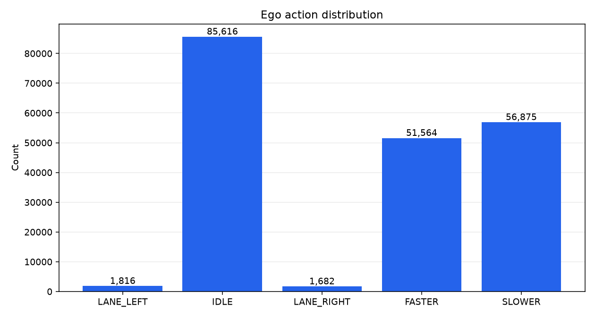
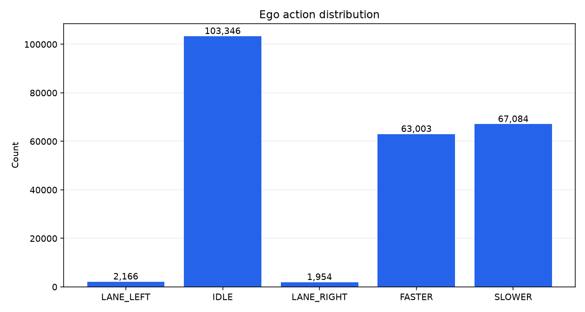

Intent-Aware Dataset Dashboard
Shared dataset-creation pipeline
Experiment 1 · Baseline dataset
Setup
Informed-policy, random no-message, and combined source views. 1,100 source episodes contribute 26,597 combined records.
Configuration
Four lanes · 60 m visibility · up to eight neighbor slots · historical packed message encoding.
Commands
.venv/bin/python -m scripts.data_collection.collect_intent_aware_dataset \
--experiment 1 --episodes 100 --include-none
.venv/bin/python -m scripts.data_collection.collect_random_no_message_dataset \
--experiment 1 --episodes 1000
.venv/bin/python -m scripts.data_collection.merge_world_model_datasets \
--experiment 1These are workflow examples. Collection uses the environment configuration at execution time and overwrites its output files. Historical data used its original configuration and encoding.
Results
Source comparison
| Source | Records | Episodes | Mean reward | Crash flags | Truncation flags |
|---|---|---|---|---|---|
| Intent-aware | 11,505 | 100 | 0.883 | 0 | 632 |
| Random no-message | 15,092 | 1,000 | 0.777 | 441 | 567 |
| Combined | 26,597 | 1,100 | 0.823 | 441 | 1,199 |
Action coverage
| Source | IDLE | FASTER | SLOWER | LEFT | RIGHT |
|---|---|---|---|---|---|
| Intent-aware | 5,439 | 2,716 | 3,046 | 197 | 107 |
| Random | 3,040 | 3,015 | 3,012 | 3,025 | 3,000 |
| Combined | 8,479 | 5,731 | 6,058 | 3,222 | 3,107 |
Message coverage
| Source | 0 | 1 | 2 | 3 | 4 | 5 |
|---|---|---|---|---|---|---|
| Intent-aware | 2,000 | 4,686 | 3,713 | 1,057 | 49 | 0 |
| Random | 15,092 | 0 | 0 | 0 | 0 | 0 |
| Combined | 17,092 | 4,686 | 3,713 | 1,057 | 49 | 0 |
Graphs


These charts describe the informed source only.
Evaluation
Detailed informed action and request statistics
| Action | Count | Share | Mean reward |
|---|---|---|---|
| LANE_LEFT | 197 | 1.71% | 0.865 |
| IDLE | 5,439 | 47.28% | 0.968 |
| LANE_RIGHT | 107 | 0.93% | 0.858 |
| FASTER | 2,716 | 23.61% | 0.843 |
| SLOWER | 3,046 | 26.48% | 0.769 |
| Messages requested | Scenarios | Share |
|---|---|---|
| 0 | 2,000 | 17.38% |
| 1 | 4,686 | 40.73% |
| 2 | 3,713 | 32.27% |
| 3 | 1,057 | 9.19% |
| 4 | 49 | 0.43% |
Reported informed rollout: 100 episodes, 2,000 actual steps, zero crashes and 100 truncations. These rollout statistics differ from counterfactual record counts.
Artifacts
Informed: data/experiment_1/intent_aware_dataset.jsonl.
Random: data/experiment_1/random_no_message_dataset.jsonl.
Combined: data/experiment_1/combined_world_model_dataset.jsonl.
Notes
Historical packed message encoding. Crash and truncation percentages in record summaries use transitions as the denominator.
Counterfactual transition flags are not actual rollout episode counts. See Training for the experiment workflow.
Experiment 2 · Larger dataset
Setup
Informed-policy, random no-message, and combined source views. 2,000 source episodes contribute 223,375 combined records.
Configuration
Four lanes · 60 m visibility · up to eight neighbor slots · 40-second informed episodes · historical packed message encoding.
Commands
.venv/bin/python -m scripts.data_collection.collect_intent_aware_dataset \
--experiment 2 --episodes 1000
.venv/bin/python -m scripts.data_collection.collect_random_no_message_dataset \
--experiment 2 --episodes 1000
.venv/bin/python -m scripts.data_collection.merge_world_model_datasets \
--experiment 2These are workflow examples. Collection uses the environment configuration at execution time and overwrites its output files. Historical data used its original configuration and encoding.
Results
Source comparison
| Source | Records | Episodes | Mean reward | Crash flags | Truncation flags |
|---|---|---|---|---|---|
| Intent-aware | 197,553 | 1,000 | 0.884 | 0 | 5,208 |
| Random no-message | 25,822 | 1,000 | 0.769 | 526 | 476 |
| Combined | 223,375 | 2,000 | 0.871 | 526 | 5,684 |
Action coverage
| Source | IDLE | FASTER | SLOWER | LEFT | RIGHT |
|---|---|---|---|---|---|
| Intent-aware | 85,616 | 51,564 | 56,875 | 1,816 | 1,682 |
| Random | 5,210 | 5,060 | 5,213 | 5,164 | 5,175 |
| Combined | 90,826 | 56,624 | 62,088 | 6,980 | 6,857 |
Message coverage
| Source | 0 | 1 | 2 | 3 | 4 | 5 |
|---|---|---|---|---|---|---|
| Intent-aware | 0 | 97,120 | 77,835 | 21,565 | 1,011 | 22 |
| Random | 25,822 | 0 | 0 | 0 | 0 | 0 |
| Combined | 25,822 | 97,120 | 77,835 | 21,565 | 1,011 | 22 |
Graphs



These charts describe the informed source only.
Evaluation
Reported informed rollout: 1,000 episodes, 40,000 actual steps, zero crashes and 1,000 truncations. Requested messages contain 163,151 aggressive and 158,488 defensive behavior entries.
Artifacts
Informed: data/experiment_2/intent_aware_dataset.jsonl.
Random: data/experiment_2/random_no_message_dataset.jsonl.
Combined: data/experiment_2/combined_world_model_dataset.jsonl.
Notes
Historical packed message encoding. This informed collection excluded no-request cases; the random baseline supplies them.
Counterfactual transition flags are not actual rollout episode counts. See Training for the experiment workflow.
Experiment 3 · Corrected spatial message dataset
Setup
Informed-policy, random no-message, and combined source views. 2,000 source episodes contribute 263,375 combined records.
Configuration
Four lanes · 60 m visibility · eight spatial slots with empty positions preserved · spatial_v1 encoding.
Commands
.venv/bin/python -m scripts.data_collection.collect_intent_aware_dataset \
--experiment 3 --episodes 1000 --include-none
.venv/bin/python -m scripts.data_collection.merge_world_model_datasets \
--experiment 3 --random data/experiment_2/random_no_message_dataset.jsonlThese are workflow examples. Collection uses the environment configuration at execution time and overwrites its output files. Historical data used its original configuration and encoding.
Results
Source comparison
| Source | Records | Episodes | Mean reward | Crash flags | Truncation flags |
|---|---|---|---|---|---|
| Intent-aware | 237,553 | 1,000 | 0.885 | 0 | 6,208 |
| Random no-message (reused from Experiment 2) | 25,822 | 1,000 | 0.769 | 526 | 476 |
| Combined | 263,375 | 2,000 | 0.873 | 526 | 6,684 |
Action coverage
| Source | IDLE | FASTER | SLOWER | LEFT | RIGHT |
|---|---|---|---|---|---|
| Intent-aware | 103,346 | 63,003 | 67,084 | 2,166 | 1,954 |
| Random | 5,210 | 5,060 | 5,213 | 5,164 | 5,175 |
| Combined | 108,556 | 68,063 | 72,297 | 7,330 | 7,129 |
Message coverage
| Source | 0 | 1 | 2 | 3 | 4 | 5 |
|---|---|---|---|---|---|---|
| Intent-aware | 40,000 | 97,120 | 77,835 | 21,565 | 1,011 | 22 |
| Random | 25,822 | 0 | 0 | 0 | 0 | 0 |
| Combined | 65,822 | 97,120 | 77,835 | 21,565 | 1,011 | 22 |
Graphs



These charts describe the informed source only.
Evaluation
Every message-bearing record in the informed and combined files passed eight-slot and requested-vehicle membership checks. Reused random records encode as all zeros. Requested messages contain 163,151 aggressive and 158,488 defensive entries. Structural validation does not establish safer driving.
Artifacts
Informed: data/experiment_3/intent_aware_dataset.jsonl.
Random: data/experiment_2/random_no_message_dataset.jsonl.
Combined: data/experiment_3/combined_world_model_dataset.jsonl.
Notes
Corrected spatial_v1 encoding preserves null positions. Includes 40,000 no-message cases from the informed collector, plus 25,822 from the reused random baseline. No records request six to eight vehicles.
Counterfactual transition flags are not actual rollout episode counts. See Training for the experiment workflow.